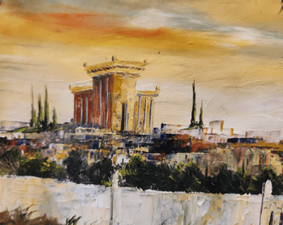

<ion-content [fullscreen]="true">
  <ion-header>
    
  </ion-header>
  <ion-button expand="block" class="ion-margin-top" [routerLink]="'./shacharit'">שחרית</ion-button>
  <ion-button expand="block" class="ion-margin-top" [routerLink]="'./mincha'">מנחה</ion-button>
  <ion-button expand="block" class="ion-margin-top" [routerLink]="'./arvit'">ערבית</ion-button>
  <ion-button expand="block" class="ion-margin-top" [routerLink]="'./musaf'">מוסף</ion-button>
</ion-content>
